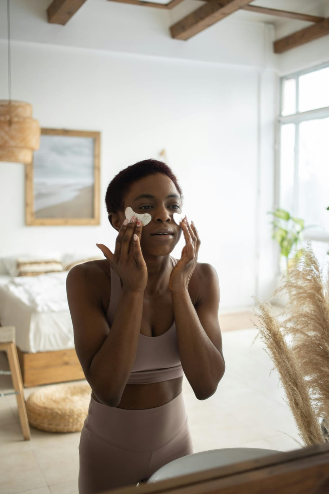

Skin care: o melhor para sua pele.
Dicas e benefícios da skin care:
Os benefícios para sua pele dependem de qual produto você precisa, aqui estão algumas recomendações:
* Cleasing oil para peles oleosas.
* Tônicos faciais para peles oleosas e acneicas.
* Hidratantes para peles secas.
* Máscaras faciais para diversas peles.
Receitas caseiras para uma rotina de skin care
Também existem opções para quem não quer gastar tanto:
Skincares Caseiras!
Essas consistem em utilizar itens que você já tenha na sua casa, como:
* Pó de café: máscaras faciais para esfoliar o rosto.
* Arroz e leite de côco: máscara facial para maciez da pele e hidratação
* Açúcar: como um esfoliante para peles oleosas.

Saiba mais